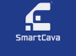

Transform your business
through Digital Product & Innoviation



Your Trusted IT Solutions Providere

Cavacode Tech is the flagship of SmartCava and serves as the
backbone of our digital innovation strategy. Positioned at the forefront
of transformative software development, Product Development in
Africa, Cavacode Tech is focused on creating value, enhancing
operational efficiency, and elevating customer experiences through
cutting-edge digital solutions.
As a custom software development firm, we partner with businesses
and organizations at every stage of their digital journey—from initial
research and documentation to building MVPs, improving user
experience (UX) and scaling digital products.
Our Transformative Value Offerings
We are exceptionally committed to building competencies in transformative From idea to launch, we help businesses turn concepts into real
digital products. Our product development approach focuses on
solving real-world problems through innovation, market research,
and intuitive design.